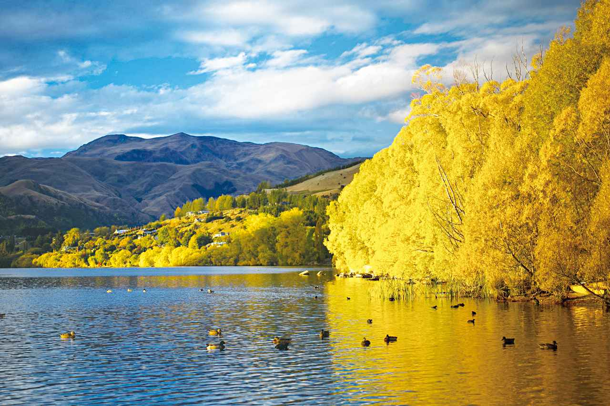
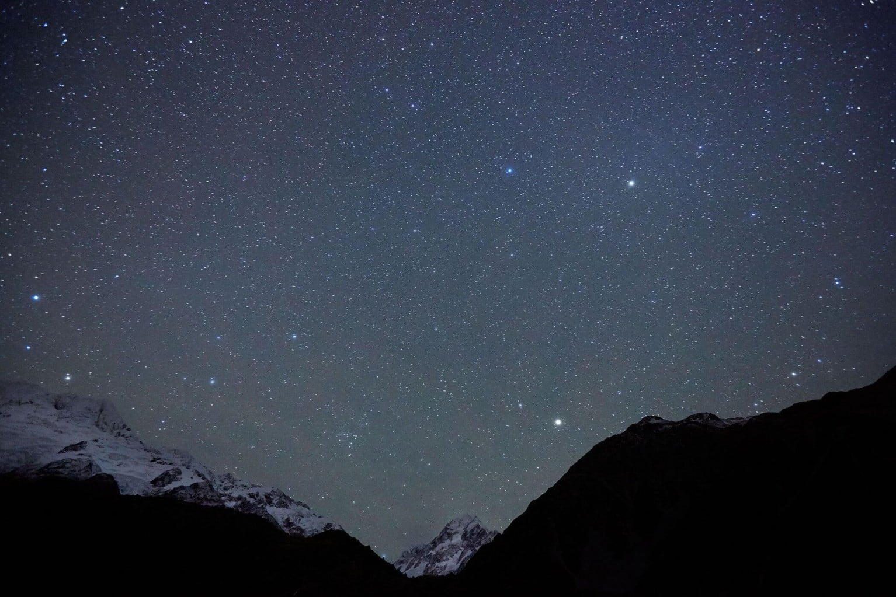
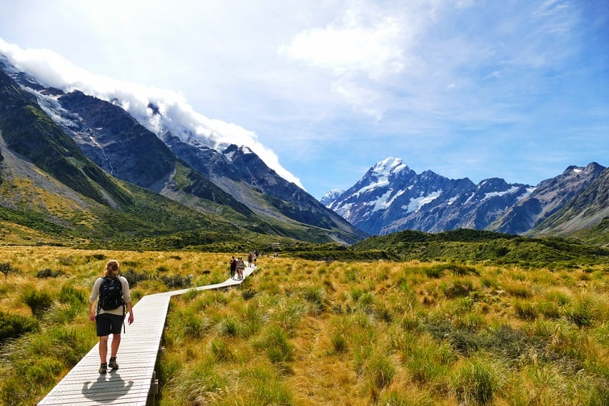

ニュージーランドは、興味深い冒険と心を満たすユニークな体験で満ちあふれています！
夏はビーチや湖でのレジャー、春・秋は過ごしやすくハイキングに最適、冬は山岳部でスキーが楽しめます。
どの季節に訪れても満足のいく旅となることでしょう♪
日本と比べると季節による温度変化はさほど大きくありませんが、1日の中で季節が変わりやすいのがニュージーランドの機構の特徴となっております。
本国は南半球にあるため、日本とは季節が逆になります。
行ってみたい時期を選んでみてください
秋は１年で最も好天に恵まれる時期です。
夏のアクティビティはすべて秋になっても楽しめます。
しかし、朝晩は気温が下がってきますので、長袖シャツや薄手のセーターをもつことをおススメします。

クイーンズタウンにある秋のヘイズ湖です。
南島では氷点下となりますが、北島はそれほど寒くなりません。
気候により寒さ対策を万全に行いましょう。
ただ、この時期のオークランドでは一時的に天ヶ降りやすいので、傘などレインアイテムの用意をしておいたほうが良いでしょう。
スキーや南天のオーロラ、クジラの観察などこの時期だからこそのアクティビティをお楽しみください♪

毎年5月末にはプレアデス星団が出現し、その後新月が空に登るとマオリの正月「マタリキ」が始まります。
自然も野生動物も新しい息吹にあふれる春は、混雑が少なく、オフピーク割引でおトクに楽しめるチャンスもあります。
文化職の豊かなフェスティバル、息をのむほど美しい景色があなたを待っています。
サングラスとジャケットを手にアドベンチャーへ出かけましょう！
クライストチャーチにあるハグレーパークや植物園でバラや桜を楽しむことができます。
夏はニュージーランドのベストシーズンです。
日本の夏とは違い湿度が低く、からっとした気候で、あまり汗をかかないといった人が多いようです。
とはいえ、太陽が雲で隠れたり、木陰では涼しく感じることがあります。
また、朝夕の寒暖差が激しく、夜になると気温が１ケタになることも……
赤道に近い国の為、紫外線対策が必須となります。日焼け止めクリームやサングラスをお忘れなく！
素晴らしい景色とスリルあふれるアウトドア・アクティビティでニュージーランドを満喫しましょう。

アオラキ・マウントクックでのハイキングは、初夏に人気のアクティビティの１つです。